Accueil
Je m'appelle Maëna ARGAÑO, j'ai 21ans et je suis actuellement en deuxième année de BTS Services Informatiques aux Organisations option Solutions Logicielles et Applications Métier au Lycée Gustave Eiffel à Bordeaux.
Parcours
2021 - 2023
BTS SIO (Services Informatiques aux Organisations) option SLAM
(Solutions Logicielles Applications Métiers)
Lycée Gustave Eiffel, BORDEAUX (33)
2020 - 2021
Licence 1 - Informatique NEC (Numérique pour les Environnements
Connectés)
Collège STEE de l'Université de Pau et des Pays de l'Adour,
ANGLET (64)
2020
Bac Scientifique option ISN (Informatique et Sciences du
numérique) : mention AB
Lycée René Cassin, BAYONNE (64)
2017
Brevet des collèges - mention TB
Collège Henri Barbusse, BOUCAU (64)
Projets
Réalisation en cours de formation :
TP6 - GLPI (réseaux-première année)
Objectif(s) : Découvrir GLPI et la gestion du patrimoine
Outil(s) utilisé(s) : GLPI
Tout d'abord, GLPI (Gestionnaire Libre de Parc Informatique) est un logiciel permettant la gestion des
services informatiques et la gestion des services d'assistance. Il aide les entreprises à garder un oeil
sur leur système informatique grâce à sa capacité d'inventorier le matériel informatique physique et virtuel.
De plus, il met à disposition une fonctionnalité permettant aux clients de signaler des problèmes ou incidents
en créant ce que l'on appelle un ticket.
Ici nous l'avons utilisé, dans le cadre du TP, pour recenser et inventorier le matériel informatique du lycée.
Ci-dessous nous pouvons voir le tableau de bord qui inventorie des éléments comme le nombre de logiciels,
le nombre d'ordinateurs, le nombre de moniteurs, le matériel réseaux, etc...
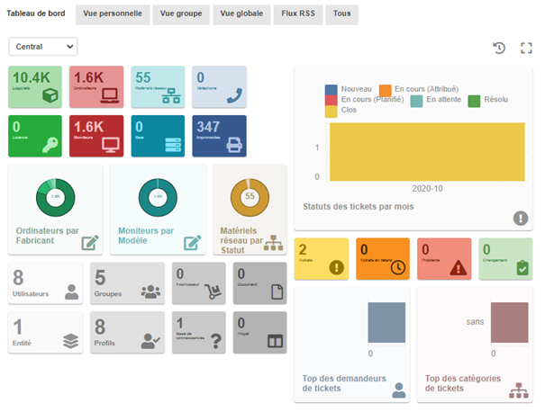
Comme nous pouvons le voir ci-dessous, GLPI permet aussi de connaitre tous les composants d'un ordinateur, par exemple :
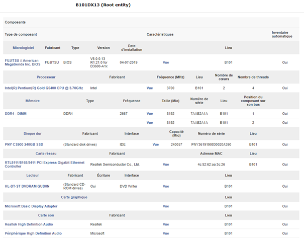
Ou encore d'inventorier les logiciels présents sur un ordinateur et de lister les versions installées :
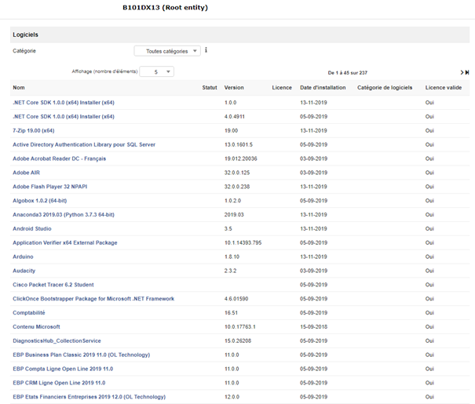
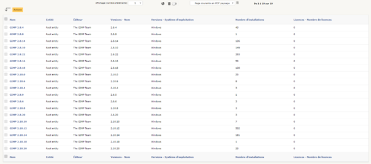
C'est donc grâce à ce TP que j'ai validé la sous compétence Recenser et identifier les ressources numériques de la compétence
Gérer le patrimoine informatique en inventoriant le matériel informatique physique et virtuel du lycée Gustave Eiffel à l'aide de GLPI.
TP - Gestion des incidents (GLPI)
Objectif(s) : Découvrir GLPI et la gestion des tickets
Outil(s) utilisé(s) : GLPI
Contrairement au TP ci-dessus, ici on se focalise sur la gestion des incidents.
La gestion des tickets se présente comme ceci:
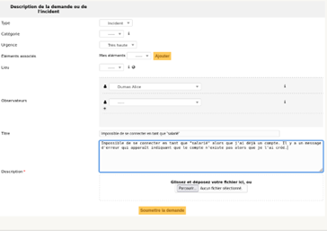
Comme nous pouvons le voir ci-dessous, GLPI permet aussi de planifier des tâches :
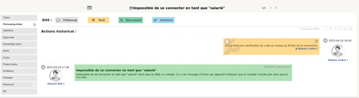
Ou encore d'inventorier les logiciels présents sur un ordinateur et de lister les versions installées :
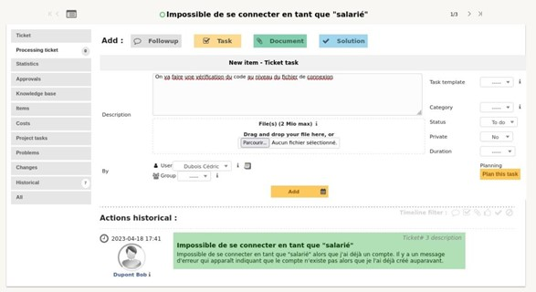
On peut changer le statut du ticket suivant les habilitations que l'on possède :
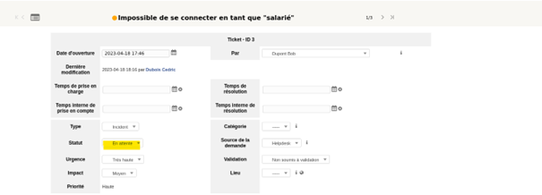
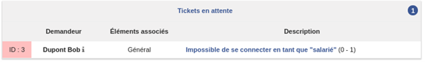
Et enfin on peut résoudre un ticket en apportant la solution au demandeur et en réglant le problème relevé.


C'est donc grâce à ce TP que j'ai validé la sous compétence Collecter, suivre et orienter des demandes de la compétence
Répondre aux incidents et aux demandes d'assistance et d'évolution en créant un ticket et le faisant passer par les
différentes étapes (nouveau, en cours, en attente, résolu, clos) avec les habilitations adéquates à chaque fois.
TP - Site Web Pizza Static
Objectif(s) : Développer un site web en HTML et CSS + respecter les normes du W3C
Outil(s) utilisé(s) : Notepad++
Le W3C est un organisme international qui a pour rôle de définir les standards techniques liés au web.
Il est utile de respecter ces normes pour favoriser le référencement naturel car il sera plus facilement lisible par les moteurs de
recherche et pour harmoniser son site afin qu'il puisse s'afficher de la même façon sur les différents navigateurs.
J'ai donc développé un site web statique que j'ai ensuite passé dans un validateur W3C comme ceci :
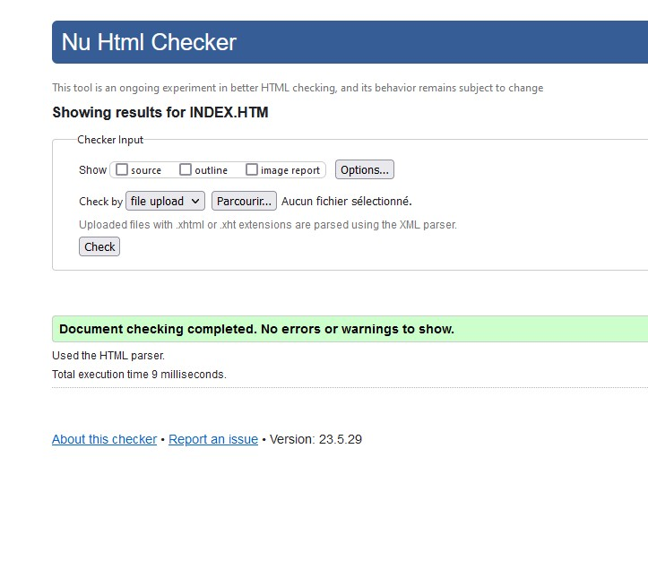
On constate qu'il n'y a aucune erreur et donc par conséquent mon index.php respecte les normes du W3C.
C'est donc grâce à ce TP que j'ai validé la sous compétence Exploiter des référentiels, normes et standards adoptés par le
prestataire informatique de la compétence Gérer le patrimoine informatique en développant un site web statique
répondant aux normes du W3C.
AP - Site web M2L Dynamique (Gestion des ligues et clubs)
Objectif(s) : Développer un site web en HTML, CSS et PHP + respecter le modèle MVC + gérer les habilitations
Outil(s) utilisé(s) : Wamp64 et vscode
Cet AP me permet de valider plusieurs sous compétences :
Gérer des sauvegardes et Mettre en place et vérifier les niveaux d'habilitation associés à un service de la compétence Gérer le patrimoine informatique
Grâce à la gestion de versions de Git et les différents push et pull faits tout au long du projet
Et grâce à la présence de différents utilisateurs possedant différents droits qui leur permettent d'accomplir telle ou telle action sur l'application.
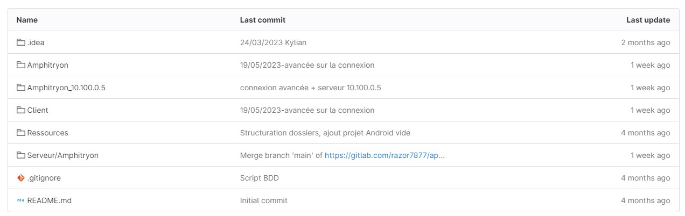
Traiter des demandes concernant les applications de la compétence Répondre aux incidents et aux demandes d'assistance et d'évolution et
Participer à l'évolution d'un site web exploitant les données de l'organisation de la compétence Développer la présence en ligne de l'organisation
Grâce à l'évolution de l'application déjà existante en fonction des demandes spécifiques énoncées dans le cahier des charges. En effet la M2L
souhaite désormais afficher des données supplémentaires et améliorer la gestion de celles-ci :
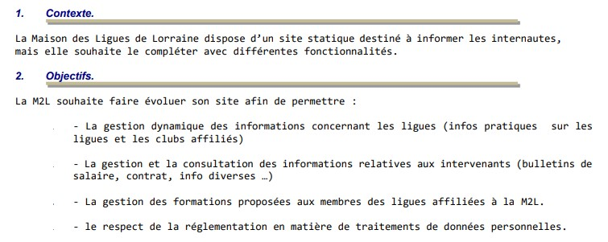
TP - Initiation aux Méthodes Agiles (Scrum)
Objectif(s) : Découvrir les méthodes agiles (Scrum)
Outil(s) utilisé(s) : Lego
La méthode Scrum est une méthode de gestion de projet Agile qui a pour objectif d'améliorer la productivité des équipes tout en
optimisant le produit réalisé grâce à des retours réguliers.
J'ai donc validé la sous compétence Planifier les activités de la compétence Travailler en mode projet en participant à une
initiation aux méthodes agiles, et notament à la méthode Scrum.
En effet, lors de ce TP nous devions, lors de plusieurs sprints, réaliser des tâches estimées et définies en fonction du cahier des charges et des instructions données par le Product Owner.
Réalisés lors du stage de première année :
Application de génération de mail
Objectif(s) : Automatiser une tache qui peut sembler ennuyante
Langage utilisé : Python (Tkinter)
Description de l'application :
Celle-ci se présente sous la forme d'un formulaire qui renseigne le genre du client,
son nom, la date du rendez-vous que l'on souhaite proposer, ainsi que l'heure.
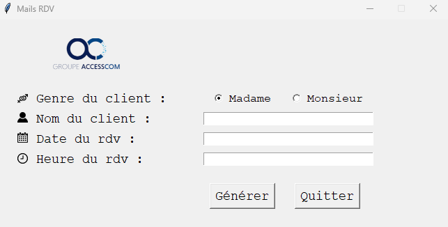
Après avoir rempli ces champs, l'utilisateur clique alors sur le bouton "Générer" ce qui
va ouvrir une fenêtre et donner un aperçu du mail créé.
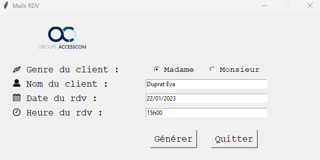
Suite à la vérification faite par l'utilisateur, ce dernier va cliquer sur le bouton "Copier"
ce qui va stocker son mail dans le presse papier.
Il ne reste plus qu'à le coller dans sa boite mail et l'envoyer au client concerné.
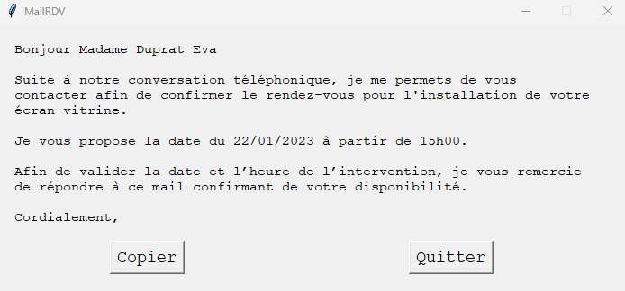
J'ai donc validé les sous compétences :
Déployer un service et Accompagner les utilisateurs
dans la mise en place d'un service de la compétence Mettre à disposition des utilisateurs un
service informatique en créant cette application puis, une fois finie, en l'installant sur chaque
ordinateur du service technique. Après cela nous avons pris le temps de leur expliquer comment se servir de l'application.
Celle-ci étant simple d'utilisation, il n'a pas été nécessaire de faire de documentation pour les utilisateurs.
Mettre en place son environnement d'apprentissage personnel de la compétence Organiser son développement professionnel en
suivant des formations sur Openclassroom et des vidéos sur Youtube afin de me familiariser avec la création d'interface en Python avec Tkinter.
Site web INVA
http://www.invacom.io/
Objectif(s)s : améliorer, alléger et finaliser le site web
Outils utilisés : xamp et sublim text
Mon rôle :
- Faire du tri dans le code afin d'alléger le site et de le rendre plus rapide et plus fluide au démarrage
- Participer au contenu, aux images et aux descriptions
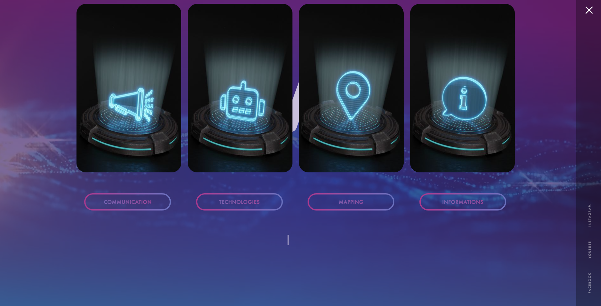
J'ai donc validé la sous compétence Participer à la valorisation de l'image de l'organisation sur les médias numériques en tenant compte du cadre juridique et des enjeux économiques de la compétence Développer la présence en ligne de l'organisation en participant au visuel et au contenu du site. En effet, nous avons sélectionné des images et rédigé des textes en suivant les instructions données par le supérieur souhaitant que le site renvoie une image bien précise de l'entreprise, c'est-à-dire technologique et innovante.
Réalisés lors du stage de deuxième année :
Site Web Wordpress : Pink Muxu♥
Objectif(s) : Créer un site Internet de zéro afin de développer la présence en ligne de l'entreprise
Outils utilisés : Local, Wordpress, ainsi que différents plugins
L'onglet Accueil :
L'onglet Mes créations :
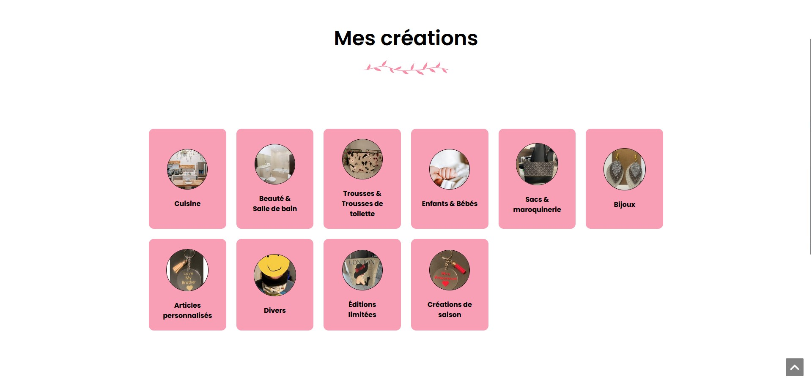
Quand on clique sur une catégorie :
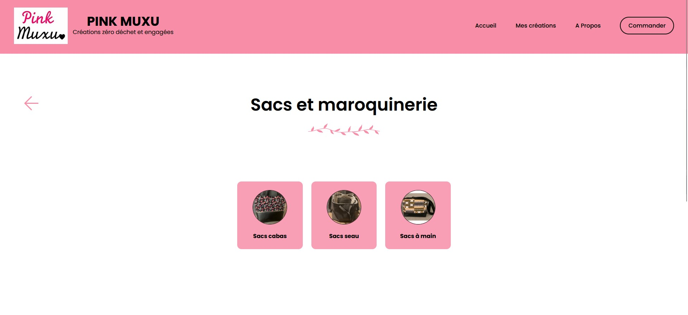
Exemple d'une page présentant un produit :
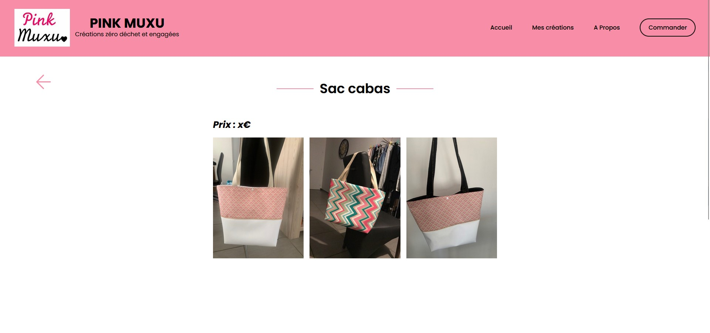
L'onglet Commander :
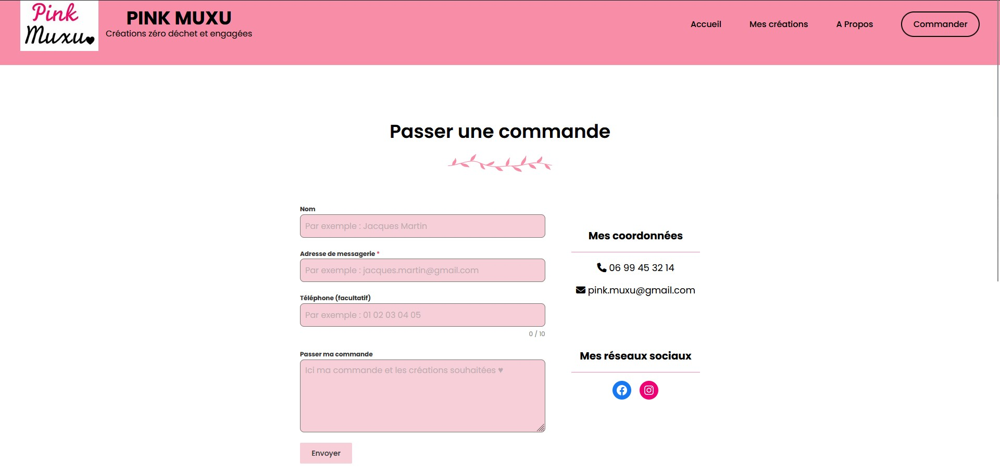
J'ai donc validé les sous compétences :
Traiter des demandes concernant les applications de la compétence Répondre aux incidents et aux demandes d'assistance et d'évolution lors des réunions avec la client qui souhaitait parfois apporter des modifications sur le site web que j'étais en train de développer.
Participer à la valorisation de l'image de l'organisation sur les médias numériques en tenant compte du cadre juridique et des enjeux économiques de la compétence Développer la présence en ligne de l'organisation lors de l'établissement d'un modèle de site web. En effet la cliente m'a fait part du fait que ce n'était pas son activité principale mais bien secondaire donc elle ne souhaitait pas de site e-commerce mais plutôt un simple site vitrine/catalogue.
Planifier les activités de la compétence Travailler en mode projet en effectuant des réunions toutes les semaines avec la cliente afin de lui montrer où en était le site et pour discuter d'éventuelles modifications à faire.
Mettre en place son environnement d'apprentissage personnel de la compétence Organiser son développement professionnel en suivant des formations comme formation WordPress ou des vidéos sur Youtube afin de me familiariser avec WordPress que je n'avais encore jamais utilisé jusque là.
Compétences
Gérer le patrimoine informatique
Recenser et identifier les ressources numériques en inventoriant le matériel informatique physique et virtuel du lycée Gustave Eiffel à l'aide de GLPI.
Exploiter des référentiels, normes et standards adoptés par le prestataire informatique en développant un site web statique répondant aux normes du W3C.
Gérer des sauvegardes et Mettre en place et vérifier les niveaux d'habilitation associés à un service grâce à la gestion de versions de Git et les différents push et pull faits tout au long du projet M2L et grâce à la présence de différents utilisateurs possedant différents droits qui leur permettent d'accomplir telle ou telle action sur l'application, ceci est géré lors de la connexion à l'application.
Répondre aux incidents et aux demandes d'assistance et d'évolution
Collecter, suivre et orienter des demandes en créant un ticket et le faisant passer par les différentes étapes (nouveau, en cours, en attente, résolu, clos) avec les habilitations adéquates à chaque fois.
Traiter des demandes concernant les applications grâce à l'évolution de l'application déjà existante en fonction des demandes spécifiques énoncées dans le cahier des charges.
Traiter des demandes concernant les applications lors des réunions avec la client qui souhaitait parfois apporter des modifications sur le site web que j'étais en train de développer.
Développer la présence en ligne de l'organisation
Participer à l'évolution d'un site web exploitant les données de l'organisation grâce à l'évolution de l'application déjà existante en fonction des demandes spécifiques énoncées dans le cahier des charges. En effet la M2L souhaite désormais afficher des données supplémentaires et améliorer la gestion de celles-ci.
Participer à la valorisation de l'image de l'organisation sur les médias numériques en tenant compte du cadre juridique et des enjeux économiques en participant au visuel et au contenu du site. En effet, nous avons sélectionné des images et rédigé des textes en suivant les instructions données par le supérieur souhaitant que le site renvoie une image bien précise de l'entreprise, c'est-à-dire technologique et innovante.
Participer à la valorisation de l'image de l'organisation sur les médias numériques en tenant compte du cadre juridique et des enjeux économiques lors de l'établissement d'un modèle de site web. En effet la cliente m'a fait part du fait que ce n'était pas son activité principale mais bien secondaire donc elle ne souhaitait pas de site e-commerce mais plutôt un simple site vitrine/catalogue.
Travailler en mode projet
Planifier les activités en participant à une initiation aux méthodes agiles, et notament à la méthode Scrum.
En effet, lors de ce TP nous devions, lors de plusieurs sprints, réaliser des tâches estimées et définies en fonction du cahier des charges et des instructions données par le Product Owner.
Planifier les activités en effectuant des réunions toutes les semaines avec la cliente afin de lui montrer où en était le site Pink Muxu♥ et pour discuter d'éventuelles modifications à faire.
Mettre à disposition des utilisateurs un service informatique
Déployer un service et Accompagner les utilisateurs dans la mise en place d'un service en créant une application puis, une fois finie, en l'installant sur chaque ordinateur du service technique. Après cela nous avons pris le temps de leur expliquer comment se servir de l'application. Celle-ci étant simple d'utilisation, il n'a pas été nécessaire de faire de documentation pour les utilisateurs.
Organiser son développement professionnel
Mettre en place son environnement d'apprentissage personnel en suivant des formations sur Openclassroom et des vidéos sur Youtube afin de me familiariser avec la création d'interface en Python avec Tkinter.
Mettre en place son environnement d'apprentissage personnel en suivant des formations comme formation WordPress ou des vidéos sur Youtube afin de me familiariser avec WordPress que je n'avais encore jamais utilisé jusque là.
Veille Technologique
Python
Python peut être intégré à Power BI pour démultiplier les capacités de Data Science de la plateforme de Business Intelligence de Microsoft.
Le langage de programmation Python est l’un des plus utilisés pour la Data Science et l’analyse de données. Il s’avère très pratique pour effectuer des tâches complexes liées à la transformation de données.
Les professionnels de la Business Intelligence n’ont plus besoin de faire appel à une équipe de Data Science pour les tâches de science des données, et les développeurs Python n’ont plus besoin d’une équipe BI pour présenter leurs analyses sous forme de rapport ou de tableau de bord.
Le Green computing
Un nouveau simulateur nommé Impact CO2 permettant de calculer l'impact carbone que possèdent nos objets numériques au quotidien.
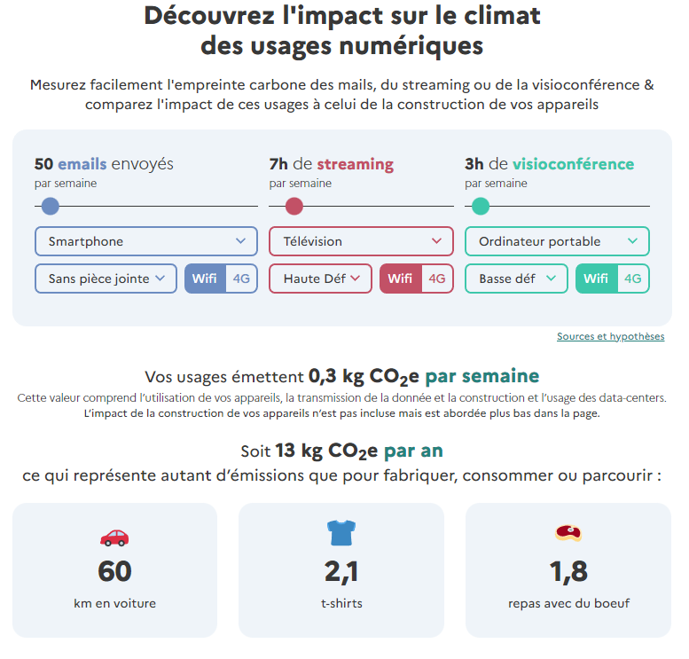